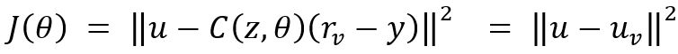

Introducción
Las estrategias de control automático pueden dividirse inicialmente en dos grandes grupos: 1) las técnicas
basadas
en el modelo del sistema y 2) las técnicas basadas en los datos de operación del sistema. En el primer grupo
se
encuentran todas las metodologías clásicas de diseño de compensadores en el dominio de la frecuencia, y
otras tantas
en el espacio de estados cuando se asume un conocimiento suficiente de la estructura y de los parámetros del
sistema
[1].
Por otro lado, se tiene a partir del trabajo de Ziegler & Nichols en 1942, el primer registro documentado
del cálculo
de los parámetros de un controlador (PID) a partir de experimentos realizados sobre una planta desconocida
[2]. Otro
tipo de corrientes del control aceptan incertidumbres paramétricas (control robusto) o se adaptan a los
cambios del
entorno (control predictivo, control adaptativo) [2]. De manera más reciente, se puede hablar de
combinaciones de
técnicas de identificación de modelos y parámetros del sistema (lógica difusa, redes neuronales, máquinas de
soporte
vectorial) acopladas con técnicas basadas en el modelo [3]. En cualquier caso, es importante resaltar que un
gran
número de estrategias se fundamentan en datos para el cálculo de sus controladores (data-driven control). De
manera
más formal, se considera como pionero el trabajo de M. G. Safonov, quien introdujo por primera vez el
concepto de:
teoría de control desfalsificada [5]. Posteriormente, otros autores han propuesto estrategias similares para
el caso
de sistemas en tiempo discreto, permitiendo destacar la técnica denominada: sintonización por realimentación
de referencia virtual (VRFT), propuesta por Savaresi y Guardabassi [6]. A su vez, la técnica VRFT presenta
adaptaciones
más recientes para aplicaciones en sistemas no convencionales según presentado en la literatura [7, 8, 9, 10 11].
El objetivo de las técnicas de control basado en datos, está orientado a la obtención de una manipulación
dinámica
apropiada a partir del menor número de información posible de la operación del sistema, es decir, con
reducido costo
computacional [12]. En este sentido se destaca el trabajo reciente de Bhattacharyya et al. aproximando
modelos
lineales para sistemas a partir de pocas mediciones [13]. Esta metodología fue empleada por Amit et al. [14]
y
Khadrahoui et al. [15]. Otros desarrollos interesantes corresponden con el trabajo de Sanfelice [16] y
Campestrini
[17]. El presente artículo aborda los principios fundamentales de la técnica VRFT, ilustrado su uso a través
de un caso
de ejemplo motivado en sistemas de generación eléctrica a partir de recursos renovables.
Materiales y Métodos
Control VRFT
Como ya mencionado, el control VRFT es una técnica de control basado en datos que asume información a priori
de un modelo de referencia. La estructura general para este tipo de control se ilustra en la Figura 1. A
partir de ella,
se destacan los siguientes elementos: P(z) es una planta en tiempo discreto desconocida; C(z,θ) es un
controlador en
tiempo discreto parametrizado por el vector θ; M(z) es un modelo de referencia proporcionado por el usuario,
donde
{u,y} son señales conocidas de la operación del sistema.
Figura 1. Estructura de control VRFT
De otro lado, la ley de control está sujeta a la minimización del siguiente funcional de costo:
el cual evidentemente busca igualar las respuestas del sistema original y el correspondiente al modelo de
referencia.
Sin embargo, al no conocerse la expresión para P(z), el único camino posible para resolver dicho funcional
corresponde
con la identificación de un modelo apropiado para la planta. Evitar dicha identificación es precisamente la
filosofía
del control basado en datos, y por tanto, se realiza la modificación mostrada en el esquema de la Figura 2,
a partir del
cual bajo la suposición: y= yv
se cumple que rv = M-1 (z) y, siendo M-1 (z) el modelo inverso de M(z). Así entonces, se
requiere satisfacer la siguiente igualdad:
transformado el problema de optimización a la minimización de:

La equivalencia entre los funcionales de costo dado por (1) y (3) es demostrada en [13]. Por tanto,
encontrar el vector
de parámetros θ del controlador en tiempo discreto C(z,θ) que minimiza el funcional de costo (3),
corresponde con
resolver de manera óptima los requerimientos impuestos por el modelo de referencia M(z).
Figura 2.Esquema VRFT modificado
Implementación computacional de la técnica
La solución computacional para el problema de optimización referido, se realiza haciendo uso del conjunto de
funciones para MATLAB y de acceso gratuito, desarrollado por Marco C. Campi et al. en la Universidad de
Brescia
en Italia. Implementación computacional de la técnica [14]
Para ejecutar la herramienta se requiere el ingreso de los siguientes parámetros principales:
-
Vectores u e y, correspondientes con las muestras de señales de entrada y salida en la planta;
-
La función de transferencia M para la relación deseada entre r e y;
-
El vector B de parámetros para una estructura de control predefinida y ponderable linealmente
Adicionalmente, existen parámetros de uso específico que no serán explorados en el presente trabajo, pero
que pueden
consultarse en [14]. A partir de lo anterior, el llamado a la función desde la ventana de comandos de MATLAB
es el
siguiente:
>> [C, θ] = VRFT1_ ry(u,y,M,B,[ ],[ ],[ ]);
entregando como salidas la función de transferencia del controlador óptimo C y el vector de parámetros θ.
Diseño experimental y análisis estadístico
Ejemplo ilustrativo
A manera de ejemplo, a partir del esquema funcional presentado en el diagrama de bloques de la Figura 3, se
abordará
el diseño de un controlador para regular la generación de tensión en un esquema aislado basado en una
máquina de
inducción autoexcitada.
Figura 3. Diagrama de bloques para esquema de generación autoexcitado
De entrada, calcular una función de transferencia para la relación (indirecta a través del índice de
modulación del
PWM del circuito inversor) entre el par de entrada aplicado al generador y la tensión de salida en los
bornes de la
resistencia de carga, se hace una tarea compleja desde el punto de vista analítico. Por tal razón, se
procede a realizar
el cálculo para los parámetros de un controlador PI empleando la técnica VRFT según se describe a
continuación.
Señales de entrada y salida para la planta
Empleando un experimento de simulación en MATLAB, constituido a través de la librería SimScape, se procedió
a
obtener la relación experimental de estímulo de entrada y respuesta de salida en el esquema circuital
ilustrado en la
Figura 4. Como señal de entrada se aplicó un índice de modulación constante, correspondiente con el valor
nominal
para la planta. Los valores de parámetros circuitales utilizados replican los desarrollos presentados por
Machuca en
[15].
Determinación del periodo de muestreo
Posteriormente, se aplicó el cálculo para la respuesta frecuencial del sistema a partir de un segundo
experimento de
simulación, en el cual se realizó variación sinusoidal para el índice de modulación del circuito inversor
alrededor de
su valor nominal, y se analizó su magnitud respecto a la variación obtenida en la tensión de salida en la
resistencia
de carga. La correspondiente relación entrada-salida en decibeles se muestra en la Figura 5, a partir de lo
cual se
establece como frecuencia máxima de esquina ω=157 [rad/s] y, por tanto, puede justificarse un periodo de
muestreo:
asumiendo una frecuencia de muestreo de 10 veces la frecuencia máxima del espectro.
Selección para relación deseada entre referencia y salida
El comportamiento deseado para el sistema controlado en lazo cerrado se asume como una respuesta al escalón
de
tipo sobreamortiguado, con tiempo de establecimiento de alrededor de 4 [s] y valor final de 141.42 [VAC] RMS
, lo
cual equivale a decir que:
cuando se emplea una aproximación bilineal para efectuar la discretización.
Figura 4. Circuito simulado en MATLAB
Definición para estructura del controlador
Como ya previamente establecido, se asume el cálculo para un controlador PI. Dicho compensador será
configurado
en la forma de posición con discretización del término integral a través de una forma bilineal; es decir:
Cálculo del controlador óptimo
Una vez definidos todos los parámetros en mención, se realiza el llamado a la función en MATLAB (VRFT1_ry)
que
realiza el cálculo para la función de transferencia del controlador que satisface los requerimientos a
partir del método
VRFT. Como resultado se obtiene lo siguiente:
Figura 5. Respuesta en frecuencia del circuito obtenida experimentalmente
Resultados y Discusión
Verificación desempeño sistema controlado
La Figura 6 presenta los resultados de simulación para el sistema controlado con los parámetros óptimos
recién
calculados.
Figura 6. Respuesta del sistema controlado
Como se observa, el sistema restablece el valor final deseado y(t)=141.42 [VAC] a pesar de las
perturbaciones
aplicadas en la carga (pasando de 50 [kΩ] a 500 [kΩ] entre t=30 [s] y t=40 [s]) y en el par de entrada al
generador
(modificándose de 1,1 [Nm] a 0,9 [Nm] a partir de t=50 [s]) y con tiempos de respuesta dinámica consistentes
con las
características requeridas en el diseño.
Todo lo anterior se obtiene a expensas de un esfuerzo de control que no sobrepasa los límites de saturación
(que para
el índice de modulación van entre cero y uno), tal y como se indica en la Figura 7.

Figura 7. Esfuerzo de control
Estos resultados confirman el apropiado desempeño del controlador calculado empleando la técnica VRFT, y más
importante aún, la independencia del conocimiento explícito de la función de transferencia de la planta para
efectuar
la apropiada sintonización del lazo.
Conclusiones
A partir de los desarrollos y resultados presentados es posible concluir que la técnica de control VRFT
facilita la
síntesis de controladores para el caso de sistemas con funciones de transferencia no conocidas. En
particular, se
demuestra la efectividad de la técnica para verificar la regulación en un lazo de control de generación de
potencia eléctrica, empleando como base la información de los conjuntos de datos de estímulo y respuesta del
circuito (control
basado en datos). Lo anterior presenta una alternativa interesante para muchos problemas prácticos en los
cuales se
dificulta acceder a representaciones analíticas y valores de parámetros del proceso bajo análisis.
Agradecimientos
Los autores agradecen el apoyo de la Universidad Industrial de Santander por financiar, en el marco del
proyecto VIEUIS 2479 denominado: “Control Centralizado para un Sistema de Generación de Energía con
Potencial Aplicación en
Zonas Rurales del Departamento de Santander”, las actividades presentadas en el presente artículo.
Referencias
[1] J. D. Correa, D. Rayo y J. Solano, “Macroscopic energy representation and simulation of a
permanent
magnet synchronous machine”, Respuestas, vol. 25, no. 3, pp. 154–164, July 2020.
[2] J. Ziegler y N. Nichols, “Optimum settings for automatic controllers”, Transactions of the
ASME, vol
64, no. 1, pp. 759–768, October 1942.
[3] F. Moreno, J. Ramirez y O. Ortiz, “Supervisory and control system for experimental bench of refrigeration
compression”, Respuestas, vol 21, no. 1, pp. 97 – 107, January 2016.
[4] E. Ibarguen, J. Montoya y M. Vergel, “Mathematical model of the aquatic phase in the population growth
dynamics of Aedes aegypti contaminated with Wolbachia”, Respuestas, vol. 25, no. 2, pp. 102 – 108,
November 2020.
[5] M. G. Safonov and T. C. Tsao. The unfalsified control concept: A direct path from experiment to
controller. Berlin, Germany: Springer, 1995.
[6] G. O. Guardabassi, y S. M. Savaresi, “Virtual reference direct design method: an off-line approach to
data-based control system design”, IEEE Transactions on Automatic Control, vol. 45, no. 5, pp. 954–
959, August 2000.
[7] T. Ortegon y C. Serrano, “Simulation of the subprocess of filling, capping and pasteurized for the
automation of a brewery”, Respuestas, vol. 21, no. 2, pp. 57 – 70, March 2016.
[8] S. P. Bhattacharyya, L. H. Keel and D. N. Mohsenizadeh. Linear Systems: A Measurement Based
Approach. Delhi, India: Springer, 2013.
[9] A. Bhaya, E. Herrera y O. Diene, “Revisiting the maximum power transfer for linear n‐ports with
uncoupled loads and applications to power systems”, Int. J. Circ. Theor. Appl., vol. 44, no. 1, pp. 1631–
1656, June 2016.
[10] S. Khadraoui, H. Nounou, M. Nounou, A. Datta y S. P. Bhattacharyya, “A model-free design of
reduced-order controllers and application to a DC servomotor”, Automatica, vol. 50, no. 8, pp. 2142 –
2149, September 2014.
[11] A. Sanfelice, L. Campestrini L. and D. Eckhard, Data-driven controller design. Dordrecht,
Netherlands: Springer, 2012.
[12] M. C. Campi, A. Lecchini y S. M. Savaresi, “Virtual reference feedback tuning (VRFT): a new direct
approach to the design of feedback controllers”, no. 39 in IEEE Conference on Decision and Control
Proceedings, (Sydney), pp. 623-629, IEEE, 2000.
[13] A. Lecchini, M. C. Campi S. M. y Savaresi, “Virtual reference feedback tuning for two degree of
freedom controllers”, European Control Conference, (Porto), pp. 2416-2421, IEEE, 2001.
[14] G. Rallo, S. Formentin, C. R. Rojas y S. M. Savaresi. “Robust Experiment Design for Virtual
Reference Feedback Tuning”, IEEE Conference on Decision and Control, (Miami), pp. 2271-2276,
IEEE, 2018.
[15] A. Kumar, Y. Zhang y M.-S. Chiu, "VRFT-based digital controller design using a generalized
second-order reference model", Computers & Chemical Engineering, vol. 142, p. 107049, November
2020. https://doi.org/10.1016/j.compchemeng.2020.107049
[16] M. C. Campi, A. Lecchini y S. M. Savaresi, “Virtual reference feedback tuning: a direct method for
the design of feedback controllers”, Automatica, vol. 38, no. 8, pp. 1337-1346, April 2002.
[17] A. Corleta, C. Lorenzini, J. Flores y L. Campestrini, “Data-driven control design applied to
uninterruptible power supplies”. IEEE Conference on Control Applications (Buenos Aires), pp. 1312–
1317, IEEE, 2016.
[18] M. C. Campi y S. M. Savaresi, “Direct nonlinear control design: the virtual reference feedback
tuning (VRFT) approach”, IEEE Transactions on Automatic Control, vol. 51, no. 1, pp. 14–27, March
2006.
[19] A. Care, F. Torricelli, M. C. Campi y S. M. Savaresi, “A Toolbox for Virtual Reference Feedback
Tuning (VRFT)”, no 18 in European Control Conference, (Naples), pp. 4252-4257, IFAC, 2019.
[20] J. A. Machuca, “Control droop de un generador de inducción en una microrred simple,” B.S. thesis,
Dept. Elect. Eng., Univ. Ind. Santander, Bucaramanga, Colombia, 2020. [Online]. Available: http://
tangara.uis.edu.co/biblioweb/tesis/2020/179030.pdf

 Ingeniero Electrónico,
andres.amaya5@correo.uis.edu.co .
Universidad Industrial de Santander, Bucaramanga, Colombia.
Ingeniero Electrónico,
andres.amaya5@correo.uis.edu.co .
Universidad Industrial de Santander, Bucaramanga, Colombia.
 ORCID:
0000-0001-7865-5742.
Universidad Industrial de Santander, Bucaramanga, Colombia.
ORCID:
0000-0001-7865-5742.
Universidad Industrial de Santander, Bucaramanga, Colombia.